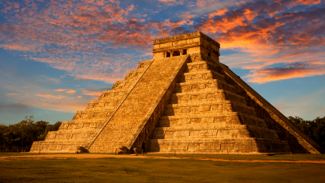
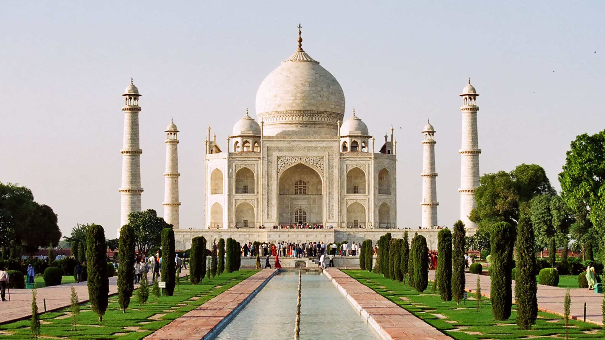

Mexico — Chichén Itzá
Chichén Itzá was a major focal point in the Northern Maya Lowlands from the Late Classic period through the early Postclassic period. The site blends architectural styles from central Mexico with the Puuc and Chenes styles of the region, likely a result of cultural diffusion rather than conquest.
Learn More →
India — Taj Mahal
Construction of the Taj Mahal's mausoleum was completed in 1648, with related work continuing for another five years. Built by Shah Jahan in memory of his wife Mumtaz Mahal, the complex was completed in 1653 at an estimated cost of around ₹5 million at the time.
Learn More →